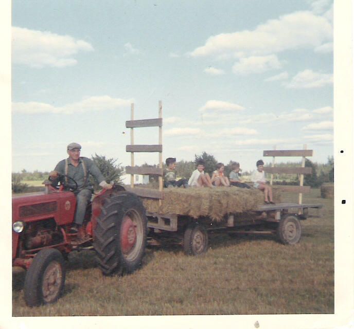
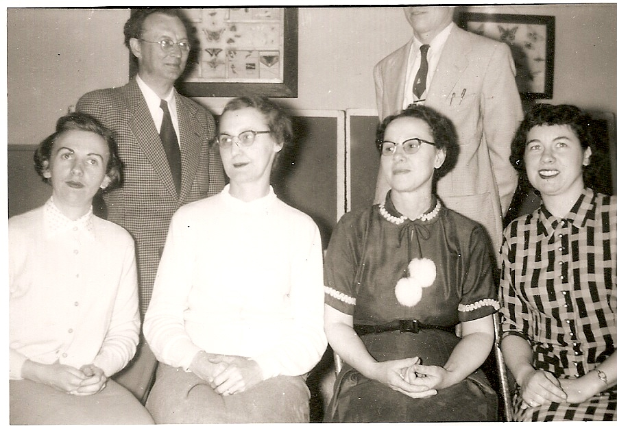

The Family Chronicle
No. 150 January 20, 2008
____________________________________________________________________
 John Glendenning on tractor with Karen and Karla Weeks in white sweaters and John and Charles Coppla – courtesy John Weeks; not sure of fifth person (1968)
Barry Mackenzie wrote:
I
check your website regularly, and am always excited to see a new
Chronicle. I was interested in your note on the Baptist Church. I,
too, have heard of such a place of worship, and understood it to be
on the Big Bob MacLean property (your late brother John's), on the
south side of the road. Did I perhaps hear once that Big Bob lived
in the old church after it was dissolved? I could be mistaken.
I
was with Janet Watling on one of her investigations to find those
forgotten headstones; obviously to no avail. We have talked since of
another such trip - on that particular journey we discovered only a
half-buried box of car parts and a couple of license plates. I did
once hear a story, perhaps from Uncle Harry Watling, about Big Bob
and the circumstances surrounding the rate of mortality among his
children. When someone was visiting, they asked Bob if he had ever
had any children. He assured them that he had once had several, but
not any more. When the visitor inquired as to what was their fate,
Big Bob nodded towards his wife in the kitchen and said, "She
ate 'em." A bit of a sardonic response, but a good example of
the kind of quick wit which so many Black Riverites possessed.
Ed:
Someone suggested, I cannot recall who, that the bob MacLean home
was the actual church referred to above
Instructional
Staff - MRHS 1954-1955

Seated from the left: Nevetta MacDermott, Helena Kingston, Mary Williston and Harriet Williston; Standing on the left Raymond Forcier. Decapitated person on the right is Don Glendenning
William John Glendenning
My Great Grandfather came to New Brunswick in 1830, married in 1833 and had three daughters and two sons. One son, Walter, was my Grandfather. The other son, John, married Ellen Dickey and they had a number of children but only one son, William John who died young. For some time I have been searching for information about that son, William John had, who was my father’s first cousin.
In December, 2007, while idly browsing the internet I found my answer. From
http://www.gloucester.net/deathsirma4.htm I found the folowing:
DEATHS & BURIALS, ST. GEOGE'S ANGLICAN CHURCH, BATHURST, NB 1864-1957 includes the following
"William John Glendenning, aged 23 years, died Apr 12th 1897 in California, U. S. and was buried in the grave yard of the Presbyterian Church in the Parish of New Bandon, this 25th day of May A. D. 1897, by me W. Aiton Curate of Bathurst (The body of this man was cremated in California & the ashes brought here to be interred. He was a Candidate for Holy Orders in the P.E Ch. Of the U.S. & a member of S. Andrew's Brotherhood; but belonged to a society existing for the encouragement of the unchristian practice of cremation. TWS) "
On further search, www.brotherhoodstandrew.org. I found the following information about the Brotherhood of St. Andrew
“The Brotherhood of Saint Andrew is an international order for men within the Anglican Community dedicated to the disciplines of prayer, study and service. The Brotherhood was formed in the 1880's in Chicago as a way to bring men and boys to Christ. It has spread around the world and today is found in all parts of the Anglican Communion.
The Brotherhood of Saint Andrew is named for Saint Andrew who, according to John's Gospel, after meeting Jesus, went to find his brother Simon, and said to him, "We have found the Messiah." Then he took Simon to Jesus.
Emulating the act of Andrew, the first Brothers Andrew reached out to men in rooming houses, giving them Bibles and inviting them to come to church to hear for themselves the witness of Scripture to God's love and His Son, Jesus. They brought people to be baptized and confirmed in the church. They brought them to Christ's Kingdom. The Brotherhood grew, and became international in scope.
AW MacDougall Book
For people interested in the history of Black River, the place to start is a book, Black River and its First Settlers by A. W. MacDougall published in 1935. Copies are scarce. Presumably the Chatham library has one.
In his book, Mr. MacDougall provides a brief sketch of the earliest families along the Black River - their roots, their backgrounds, and some of the family linkages after their arrival.
When I was growing up Allie MacDougall lived in Hexham between the Hexham corner and the Victoria Bridge. After the war, he moved to Chatham. Rumour has it that his daughter, Margaret, is gathering information to update the book
The Family Chronicle (Copyright) is an occasional newsletter published by Don Glendenning and posted on the family website. It is intended to share information about my family, community and the times in which I grew up. While every effort is made to be accurate, errors are likely to occur. Comments, enquiries and information may be sent to 62 Queen Elizabeth Drive, Charlottetown, PEI, C1A 3A9. Tel: 902 892 5859. Email: don@glendenning.net Web: www.glendenning.net/don